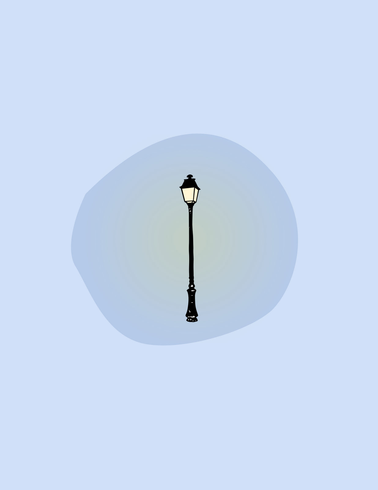
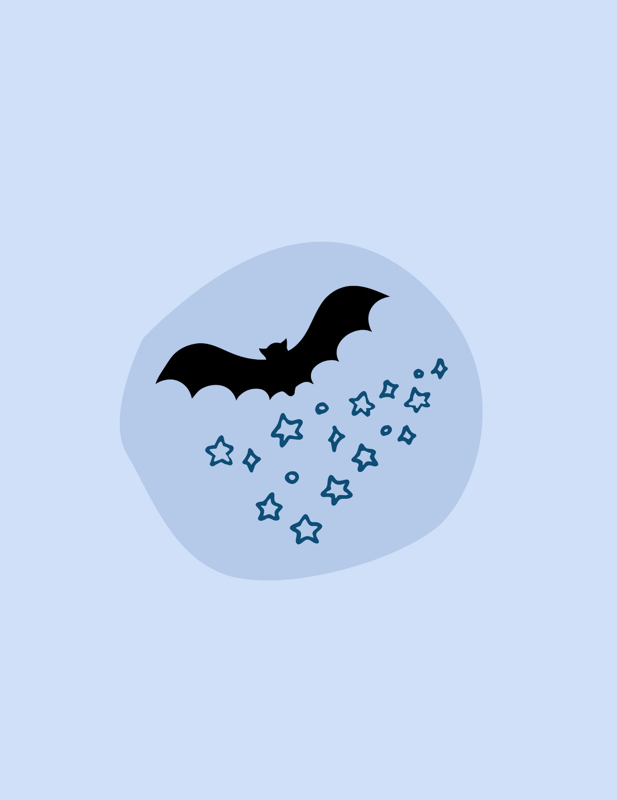
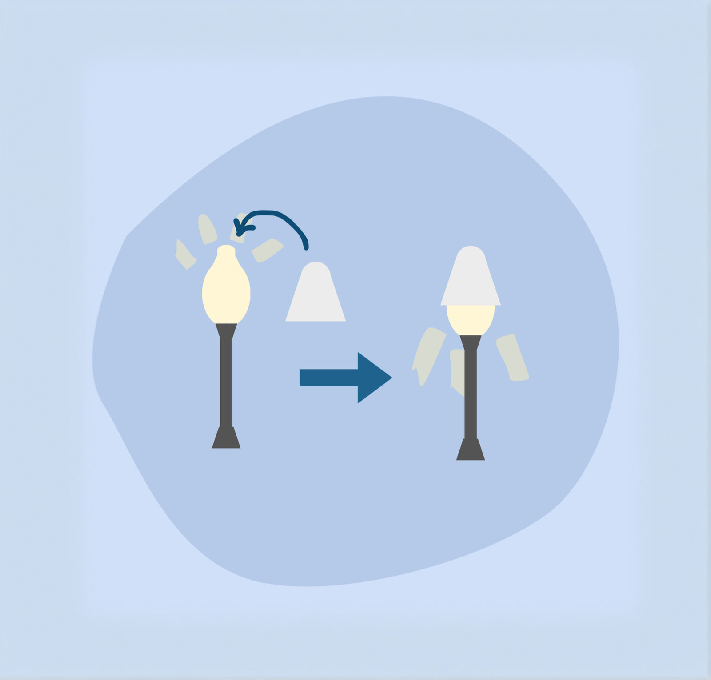

See the Stars
Reducing light pollution on the Middlebury campus, one street lamp at a time.
This project is on pause
We're looking for an inspired project lead to restart it. If you're interested and willing to dedicate a semester to making it happen, please get in touch.
Contact usWhere does the light pollution come from?
Street lamps! Most street lamps on the Middlebury campus have no caps and send light upward, causing light pollution.
What does it affect?
It disrupts local ecology, affecting bats, birds, and other wildlife. It also hides the stars: the Milky Way is invisible on campus but appears just five miles from the college.
What are we doing about it?
Campus needs more sustainable design. We plan to design and install lamp tops on all the street lights.
From prototype to campus-wide
Design and prototype
We've teamed up with the Middlebury grounds crew and got the green light to start building prototypes. We've been 3D printing mini versions of our light shades and exploring materials for full-size models. The goal: three strong contenders that balance cost, durability, weight, and ease of installation.
Sign-off and installation
With solid prototypes, we'll go back to the grounds team for feedback and approval, explaining our choices and how the designs make a difference. With a thumbs-up, we'll install prototypes in a small test area on campus.
Follow-up and impact
After installation, we'll track how the prototypes hold up and measure the reduction in light pollution, refine the designs, and roll out what works best across campus.



Get involved!
If you care about sustainability, ecology, astronomy, design, or just making a difference on campus, this could be your project. We're always looking for more hands and new skills.